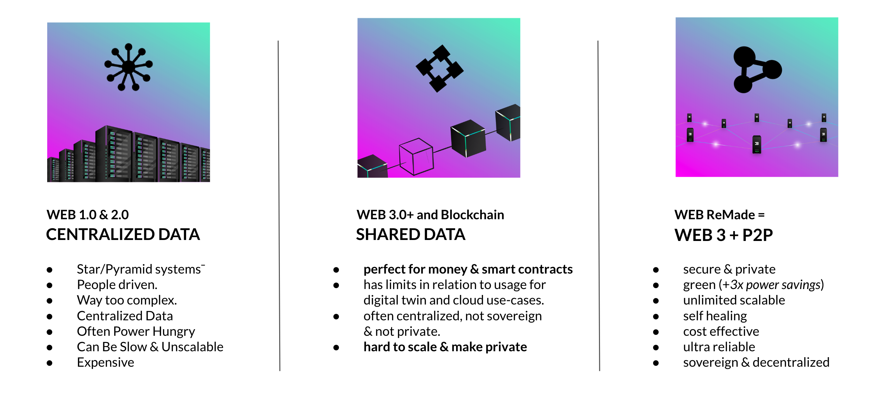
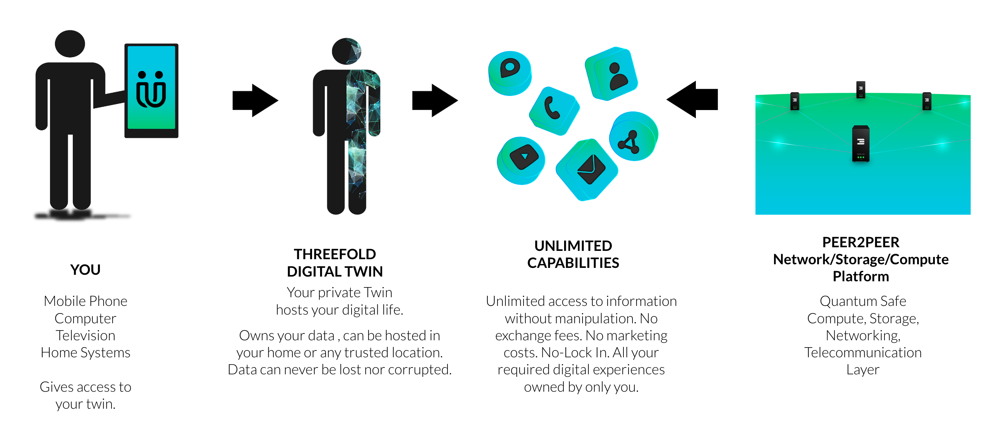
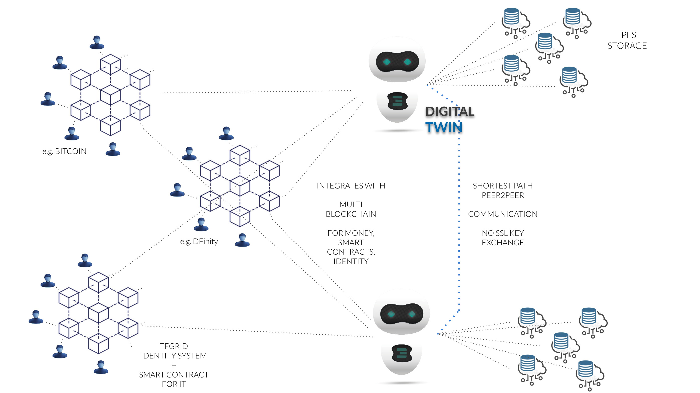
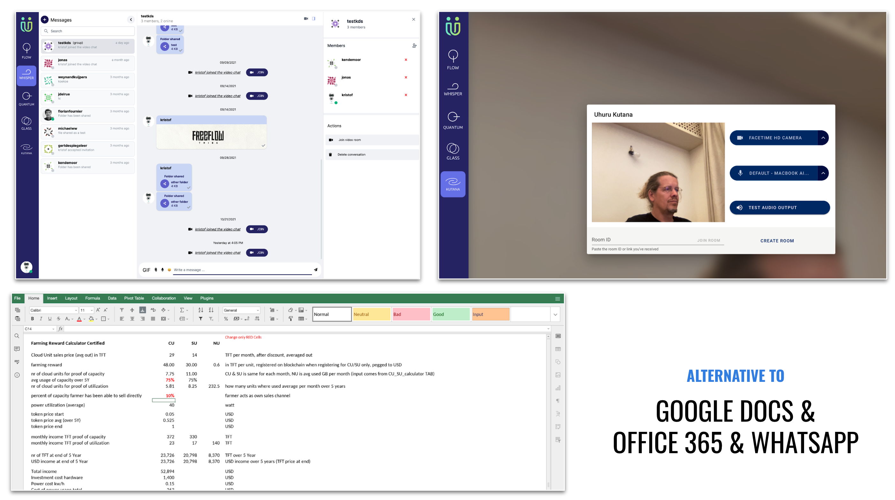
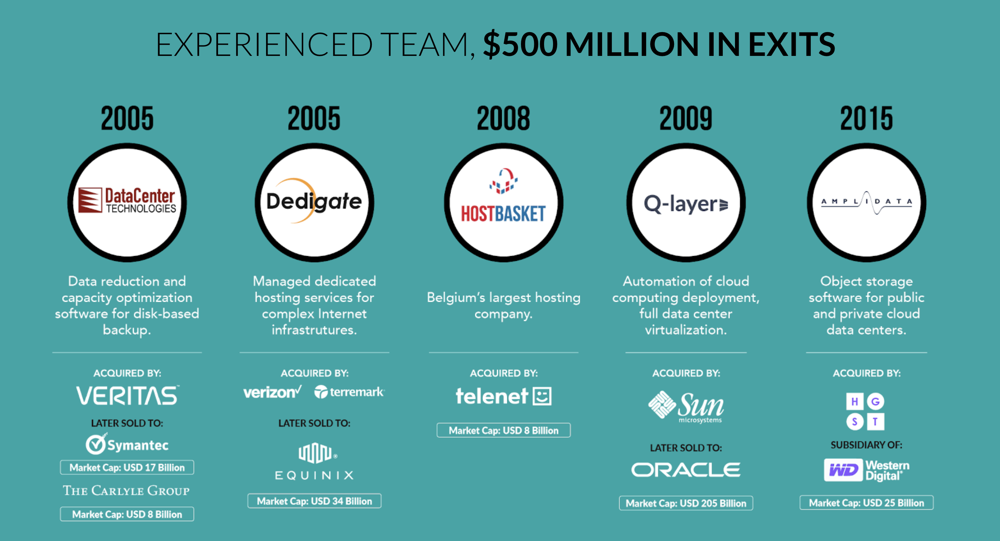

Project Intro
Digital Twin primitive: composable self-contained for sovereign digital life
Introduction and references
How we use the internet today is not in our best interest: we don’t own our data, most of the physical infrastructure is centralized, and a few companies own most of the internet. A significant redesign is in order to fit the needs of the modern world. Let us introduce the concept of a digital twin, our decentralized digital counterpart, to build experiences on the internet, a planet and human-centric.
The Digital Twin is a primitive that assures you only own your data and no one else. Each digital twin is an actor that can talk to each other. Twins are a fully independent entity that knows how to translate that specific domain language to a functionality. Experience goes from the high-level requirements of the language down to the message to the twin.(RC: change to a much more technological definition.)
Intro web4

It consists of a peer-to-peer infrastructure. A decentralized cloud system to support a set of tool that will be used in the digital twin. The optimization is huge (x10) in terms of sustainability compared to centralized cloud computing. It is also more cost-effective.
Intro FreeFlow
As an organization, FreeFlow aims to be a socioeconomic network where people collaborate to accelerate social platform regeneration and generate positive externalities.
Problem
In the next ten years, we will witness technological macro trends converge. The AI machines race, the rise of micro-economies, and the intertwined-metaverse reality will assemble and merge into the next-gen user experiences. And the Digital Twin (DT), a simple yet powerful agnostic standard, can offer, at the same time, autonomy and privacy for individuals and surveillance control to dominant companies in the information technology industry. Undoubtedly DT primitives will impact work and society as the interface to the digital world in a conscious machine era.
Anyway, it's a kind of moonshot now. However, organizations out there are developing different Digital Twin concepts. The basic idea from which it scaffolds off is a virtual representation that serves as the real-time digital counterpart of an individual, object, or process.
The industry is talented in creating solutions to problems that should have never been there in the first place.
We call this the Onion Problem. Still, it means that systems get so complicated that people don’t dare to change anything inside, so everyone keeps on creating other layers on top of the layers which already exist, this lead to even more complicated systems which no one seems to fully understand and allowing hackers to have a great time because there are hundreds of places to find vulnerabilities. The current way the internet is created is just wrong; the client-server is simply wrong, the fact that we duplicate our files at least ten times on the internet is wrong, and we need Web 4.0.
Solution
Our purpose here is to find resources to build a composable, open-source Digital Twin, based on ThreeFold's Web4 proposal, running on top of the decentralized ThreeFold's grid, though layer 0 agnostic.
Decentralized grid infrastructure and network architectures combined are 100% independent of any server or blockchain-based Internet experience and can give individuals control over their data. A sovereign center of digital life from work to social.
FreeFlow is teaming up with ThreeFold to lead the architecture and building of the Digital Twin. FreeFlow is a ThreeFold partner, a self-government community that is experimenting at the edges of the art, positive-sum games, and protocol economy. As we like to say: "We're all gonna make… the machines work for people, not companies".
Wrapping up
- A trust-based system, where people can be themselves and communicate with each other and the project in a safe container with entire identity and transparency.
- An application and development platform allows them to build their “experience” in the fastest possible way with less complexity and no need to re-invent everything (like is the case now).
- Storage system where all data & information are stored by the user and owned by the user. An ultra-reliable system that can never lose data and scales to a planetary scale.
MISSION
Create the infrastructure layer for an upgraded internet:
- A more reliable internet, one which can meet the challenges of the future (climate change issues, possibility of unrest, financial crisis, …).
- A more sustainable internet, using a lot less energy
- A more safe internet
- An internet where we can be the center of our digital life with more security, less costs, no middleman, …
Providing for
- Experiences which allow people to be free, safe and self sovereign.
- Any application which puts the people in the center and allows them to have full control over their data & future.
- New financial systems (DEFI, but different than today's casino-like environment, peer2peer)
- Projects which want to build communities to achieve planet positive goals.
- Countries that choose to work in a decentralized manner
Of course all of this can only happen by building communities and by collaborating with like minded projects/people.
Why an upgraded Internet
- The current internet is very unstable (too centralized fiber cables, data centers, …)
- The current internet is very unsafe
- The current internet is not distributed enough, only in a few countries.
- The current internet is too power hungry.
- The current internet is too complicated
- The current internet is exploitative, it turned us all into a product.
To create an upgraded abundance based system we need to provide following 3 pillars:
- a regenerative, safe, sovereign internet infrastructure layer = ThreeFold
- an integrated stable decentralized financial system (DEFI)
- a set of experiences (applications) and information to allow everyone on equal basis to learn, create, exchange, travel, … basically experience the abundance based world
Imagine a world where communities can build their own internet, from scratch, an internet which would deliver all the needs for a different future life. Each Internet deployed by the people for the people is called an OurWorld Internet.
In each Regional Internet abundance is the base:
- lots of free information, education, knowledge (books, encyclopedias), earth information (maps, videos), art (music, video, …), …
- Your applications required for your digital professional and personal life are all free
- You can find anything for free, you can promote everything for free.
- You can freely exchange anything to anything else (money for good, good for good, money for money, …)
This internet is “a peer2peer people’s internet”, created and owned by all of us together. The economic principles are dramatically different. Everything is available to build your own internet, from scratch. As a starting point you only need some computers and standard network equipment, all the rest is achieved by the magic of our threefold opensource software.
Purpose

-
Get basic communication, storage and messaging system to work (this grant)
-
Implement first functionalities inside Domain Specific Language
- Start message chat with another digital twin
- Send a text message (no interface)
- Start message chat with another digital twin
-
-
Expand and solidify phase (primitive DSL)
- Connect with different blockchains through the digital twin
- Exchange files using the decentralized grid
- Permission access layer to specific files inside my cloud storage
- Deploy production Digital Twin on the decentralized grid
-
Interface UI/UX
- The first production uses cases = Whatsapp, ...
-
Build dAPP to set us free from big corporation services
- Alternative to Spotify
- Alternative Airbnb
- Alternative Uber eats
- Alternative TicketMaster
Architecture

Architecture Twins
Each user has a digital twin, the user interacts with the digital twin through e.g. a browser but in future can be voice, chat, metaverse exerpience.
graph TD
User1[User 1] --- Browser1
Browser1 --- |websockets| TWIN1
User2[User 2] --- Browser2
Browser2 --- |websockets| TWIN2
User3[User 3] --- Browser3
Browser3 --- |websockets| TWIN3
TWIN1 --- p{PLANETARY NETWORK}
TWIN2 --- p{PLANETARY NETWORK}
TWIN3 --- p{PLANETARY NETWORK}
- Each digital twin is private for the user and only the user has access to it.
- The browser communicates over websockets (private and encrypted) per user to their twin.
- The twins talk to each other over the planetary network
Experiences
graph TD
User --- Browser
Browser --> a1[Whatsapp Alternative]
Browser --> a2[Gdocs Alternative]
Browser --> a3[Zoom Alternative]
Browser --> a4[LinkedIn Alternative]
Browser --> a5[Facebook Alternative]
Browser --> a6[many more ...]
a1 --> TWIN
a2 --> TWIN
a3 --> TWIN
a4 --> TWIN
a5 --> TWIN
a6 --> TWIN
TWIN --- p{PLANETARY NETWORK}
Each twin has multiple experiences
Some example applications ready to be launched on top of the digital twin, it requires the purpose of this grant which is an improved communication mechanism between the twins.
Metaverse

Gdoc/Whatsapp/... alternative

Architecture Planetary network
The planetary network (originally based on an opensource project yggdrasil, but will be extended as described in this grant) will have following features
Each endpoint of the Planetary Network is called a Planetary NIC (PNIC)
- Reliable Message Bus (integrated in PNIC)
- can send in super reliable way messages between the digital twins
- messages can be types, so strong verification happens (complex types supported)
- supports serialization based on CAPNP (https://capnproto.org)
- Communication over UNIX domain sockets / websockets to the
- End2End Encrypted Messaging
- Each PNIC has private & public key (unique globally)
- addressing happens based on public keys globally
- Self healing (if 1 link goes down it will look for other interface)
Twin to Planetary NIC
The planetary nic is part of our planetary network (see https://github.com/freeflowuniverse/freeflow_network). Each NIC allows the twin to talk to a local interface of the planetary network.
- NIC stands for Network Interface
- Each NIC has following functions
graph TD
User1[User 1 Internet Experiences] --- TWIN1{Digital Twin 1}
TWIN1 -->|Local Unix Socket, Secure| PNIC1[Planetary NIC]
PNIC1 ---|Planetary Network TCPIP| PNIC2[Planetary NIC]
Twin to Twin Communication
graph TD
User1[User 1 Internet Experiences] --- TWIN1{Digital Twin 1}
User2[User 2 Internet Experiences] --- TWIN2{Digital Twin 1}
User3[User 3 Internet Experiences] --- TWIN3{Digital Twin 1}
TWIN1 -->|Local Unix Socket| PNIC1[Planetary NIC]
TWIN2{Digital Twin 2} -->|Local Unix Socket| PNIC2[Planetary NIC]
TWIN3{Digital Twin 3} -->|Local Unix Socket| PNIC3[Planetary NIC]
PNIC1 ---|Planetary Network TCPIP| PNIC2[Planetary NIC]
PNIC2 ---|Planetary Network TCPIP| PNIC3[Planetary NIC]
PNIC1 ---|Planetary Network TCPIP| PNIC3[Planetary NIC]
Reliable Message Bus
Is an integrated part of the Planetary Network and its PNIC.
FreeFlow Chain Architecture
graph TD
User1[User 1] --- Browser1
Browser1 --- |websockets| TWIN1
User2[User 2] --- Browser2
Browser2 --- |websockets| TWIN2
User3[User 3] --- Browser3
Browser3 --- |websockets| TWIN3
TWIN1 --- p{FreeFlow Chain}
TWIN2 --- p{FreeFlow Chain}
TWIN3 --- p{FreeFlow Chain}
The FreeFlow chain will be based on to be chosen blockchain.
The blockchain will provide following functions
- identity management
- kyc verification (with link to 3e party providers)
- DID support
- circles
- people get grouped into circles
- authentication/verification
- proof of authenticity
- audit log of security events
- DAO features
- Address Book (like a sort of phonebook)
- Financial Management/money as relevant for this product
Use of Funds
This first grant application supports a proof of concept platform development to meet the technological and business needs of Digital Twin
Project Scope
The scope of this grant refers to item 1 described above. The same enrollment process will be done when the previous one is finished. The aiming goal is to complete all the three steps of development of the technology itself to achieve its full potential
All the specific milestone described and detailed below refers again to proof of concept item 1
Milestone 1: Basic working & Setup
What do we want to achieve in milestone 1
- first basic working of digital twin technology
- deployment & basic testing of digital twins
- ping service implemented (prove the concept is working)
- demonstrate the basic working network primitives
Chosen technologies:
There is a considerable shift to have guaranteed that the most remote community would have access to every fundamental resource in terms of access and connectivity. We are very proud of collaborating with ThreeFold, which is building an entire grid to provide all those benefits.
TFGrid
- The infrastructure is the network of 3Node that the digital twin will be hosted on.
- see https://www.threefold.io
Digital Twin Technology (FreeFlow Twin)
- The code will be in https://github.com/freeflowuniverse
- is NodeJS or VLANG based user centric app, deployed on Zero-OS using FFChain & Planetary network for communication
FFChain
- Is a local blockchain which is deployed together with the Planetary network & nodes
- Choice to be made which blockchain we go for could be Algorand Sidechain, Casperlabs, Cosmos...
Zero OS
- Ultra scalable low level operting system
- Repository: https://github.com/threefoldtech/zos
Planetary Network
- Repository: https://github.com/freeflowuniverse/freeflow_network
- see Planetary Network Architects
Implementation Remarks
Finding another Digital Twin by the twin id is a new use case required for exchanging information between N instances of use.
For example, the implementation of "findDigitalTwinById()" should exist upon instance DSL to provide extensibility and connectivity with multiple peers on the grid.
This milestone will be achieved by implementing the primitives both on NodeJS Backend and Rust DSL Engine.
This feature enables the ability to create a trusted network with different Digital Twins to establish connectivity.
Once a Digital Twin belongs to your trusted network, you'll be able to exchange data, interact via different applications, and build customized apps that can be shared with the network.
A trusted network helps create high-level relationships between different nodes. This trust will boost the creation of a new business that positively impacts the network value.
- Should be able to run queries on grid network;
- Should be able to check the result of each query
- The query result should contain identity/location information from a different twin.
Acceptance criteria for milestone 1:
-
base features
- ping service on each digital twin
- ability for twins & browsers to communicate to each other (safe, scalable, secure)
- ability for twins & twins to communicate to each other
- reliablity, scale & performance is embedded requirement of the solution
-
technology choices
- blockchain has been chosen and can be deployed, minimal requirements met
- RMB is created in golang or vlang
- PNIC is created in golang or vlang
- Digital Twin is created in vlang or nodejs
-
infrastrucure as code concept:
- Should be able to run, stop and restart the entire infrastructure using IAC concept
- by means of a vlang based script
- by means of a terraform based script
- by means of kubernetes scripts
- chosen blockchain can be deployed
- twins can be deployed
- planetary network be deployed (with integrated RMB)
-
basic communication requirements
- Browser can communicate over websockets to planetary network and/or digital twin
- Browser can use typed/complex messages (type security)
- Twins can talk to each other using PNIC (Planetary Nics)
- PNICs can communicate to each other over websockets (or equivalent choice)
-
monitoring
- rest based endpoints are available to check health
-
compatibility
- need to be able to demonstrate how every javascript based project will be able to communicate & work with this backend technology
Milestone 2: Security, Redundancy and Scalability
In milestone one we have been able to demonstrate that the system can be setup and the basic ping service is working.
This milestone is all about Security, Redundancy and Scalability
Its important in such a system we finetune the components to make sure that minimal required perofrmance and scale can be achieve.
Acceptance criteria for milestone 2:
-
performance / Scalability
- 1000 twins can be deployed < 2h
- 1000 twins can be communicate to each other for at least 1 message per sec
- +5000 transactions per second can be achieved over total system
- architecture insight (based on logic), that this sytem can scale to millions of users
-
global approach
- Deploy twins over +10 countries
- Demonstrate how the twins can communicate to each other using different ISP's
- Demonstrate how a broken node gets twins to relocate and continue operations
-
security
- each message is end2end encrypted
- each message cannot get corrupted
-
redundancy
- when network link goes down, and there is still another network link possible the system can find the new path < 2 minutes worst case
- if a direct network connection is not possible, the system can route traffic over another node (hop over nodes)
- any node going down should not have impact on uptime of system
- If network is down, the messages will be queued and retried untill timeout
Milestone 3: Integrated storage primitive based on IPFS.
NFT's are a serious usecase of decentralized systems but its hard to do a proper integration.
The purpose of milestone 3 is to implement an IPFS pinning service as part of the Planetary network.
graph TD
User1[User] --- Browser
Browser --- |WEB3| call1{{IPFS PINNING CALL}}
call1 --- PNIC1[Planetary Network NIC]
PNIC1 --- PNIC2[Planetary Network NIC]
PNIC1 --- PNIC3[Planetary Network NIC]
PNIC1 --- p{FreeFlow Chain}
PNIC2 --- p{FreeFlow Chain}
PNIC3 --- p{FreeFlow Chain}
The pinned data can belong to 1 user or multiple users at once.
Acceptance criteria for milestone 1:
-
basic features
- pin IPFS files on TFGrid using planetary network
- integration with chosen blockchain (auditing/metadata)
- each node can be used to retrieve the files
-
performance / Scalability
- 100.000 files can be stored on the network
-
redundancy
- files can be stored multiple times on the network
- files can be retrieved through multiple locations
- if a node goes down but pinning happened on multiple nodes, file cannot get lost
-
payments
- users can pay for their storage requirements
- billing for used bandwidth
- users can topup
- users can see if they still have money left for their storage requirements
License
- All research papers or the like should be in Creative Commons.
- All code is MIT or Apache 2
- The Planetary Network code is LGPL
Benefit for DEVx DAO
Explanation as to how your proposed project would benefit the DEVxDAO ecosystem AND/OR support transparent and open source scientific research and/ or development if applicable.
TODO:
Founders Background

Gava
Kristof
Milestones Breakdown
KPIs and Beta Launch Outcomes
We will accomplish the essential proof of concept functionality when 500 users create their digital twins and invite at least one new user to build their trusted network.
Development Approach
We've broken down our technical milestones into three modules for this grant proposal with a total project duration of 7 months and a budget of 300,000 Euros.
We provide a more detailed breakdown of the development during each milestone in the Milestone section of the application.
Platform development uses Rust, NodeJS, VLang, and Redis.
Your resume (Linkedin) or Git (For developers)
LINKEDIN GAVA + LINKEDIN DEVs
Grant details
Please enter the total amount you are requesting as a grant:
300.000
Will payments for this work be made to an entity such as your company or organization instead of to you personally?
DEFINIR
TODO: whats is this?
Please select all planned uses for your grant funds. Select all that apply and enter the estimated portion of grant funds allocated for each. All totals must equal the upper amount.
Salary and other personal compensation
Percentage kept by OP: 25%
Travel and conferences
Percentage kept by OP: 0%
Software, tools, infrastructure
Percentage kept by OP: 0%